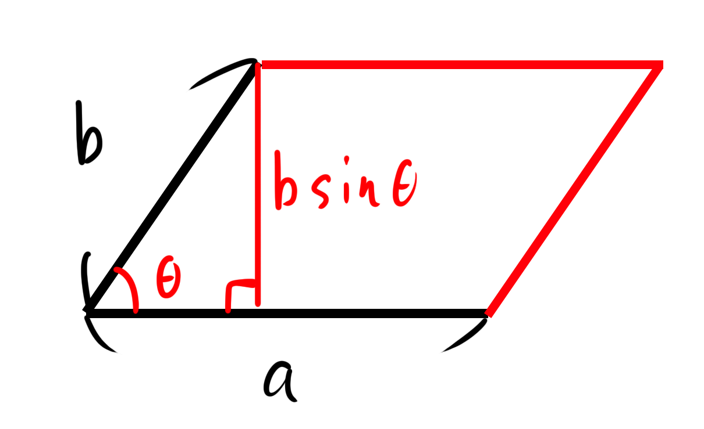
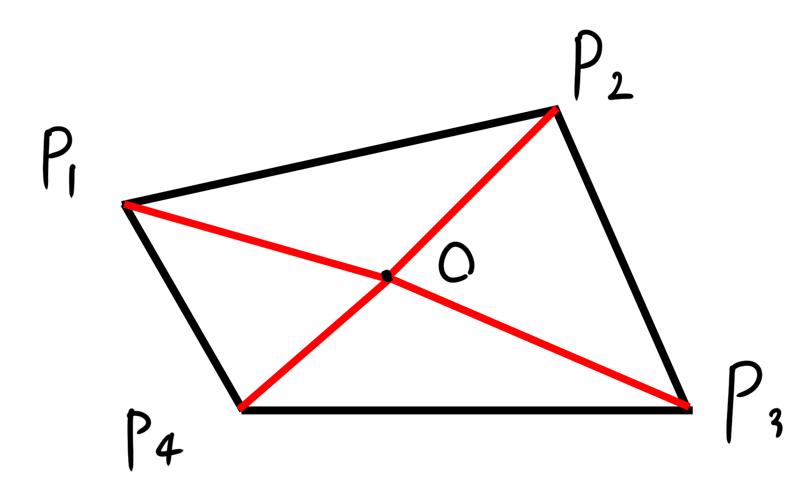

| 作成日 |
2025/04/09 |
| 最終更新日 |
2025/04/09 |
多角形の面積公式
背景
AtCoderにて、有志の方によって提供されている競プロの典型問題41の解説[1]にて、式の理解に大分時間がかかってしまいました。勉強もかねて、せっかくなのでまとめます。
内容
-
目標の式
-
ベクトルの外積と三角形の面積
-
多角形の三角形への分割
-
式の変形
-
式の意味
目標の式
解説[1]の3ページ目に載っていた、以下の多角形の面積を求める式を理解することを目標とします。
ベクトルの外積と三角形の面積
三角形の面積を求める方法として、ベクトルの外積を利用できます。
ベクトルの外積の定義は以下の2通り[2]があります。
- 空間ベクトル
と
にたいして、長さが
で、
と
に垂直なベクトル
-
成分表示された2本の空間ベクトル
、
に対して、
という成分で表されるベクトル
ここで、
は
と
がなす平行四辺形の面積と等しいです。ただし、θによっては値が負になることがあることに注意が必要です。

平行四辺形の面積がでたら、これを半分にすれば三角形の面積になります。
また、
と
がxy平面上にあるとしたら
となるので、定義2の式から外積ベクトルは次の通りです。
これが平行四辺形の面積の大きさとなるので、三角形の面積は(正負はおいておいて)、
になります。
多角形の三角形への分割

△OAB、△OBC、△OCD、△ODAの面積が出せれば、四角形の面積を出せます。図は四角形ですが、他の多角形でも同様に分割できます。
つまり、この多角形の面積は各三角形の面積の和で次の様に表せます。
ただし、
-
の座標を
-
ここまでの話は、
こちらのサイト
[3]で詳しく書いてあるので、合わせて参考にしてください。
原点を内部に含まない場合、各三角形の面積が正負でいい感じに打ち消しあうことに注意が必要です。
式の変形
多角形の面積を求める式も導出できたので、これで終わり……、とはなりません。改めて解説の式と、導出した式を並べてみます。
-
-
よく見ると絶対値の中身が違います。ということで、式変形して一致することを確かめましょう。
それぞれの式でi = k-1、kの値をとりだし、
・
について比較します。
- 1の式
-
の係数
-
の係数
- 2の式
-
の係数
-
の係数
式の意味
同値であることの確認はしましたが、直接何を表しているのかが結局わからずじまいです。xの差とyの平均(最後に2で割ることから)を利用して何かしてるんですかね、一体どこの面積を持ってきているのか。
調べていたら、考察を見つけました(式変形についても書いてありました)[4]。
x軸と登場する2点からの垂線と2点を結んだ線分から作成される台形の面積らしいです。
三角形を使っているとばかり思っていましたが、これで納得です。
名前もついているらしく、倍横距法というらしいです[5]
積分から考えると、面積を求めるのに台形を使って考えるのは自然ですね。
まとめ
以上、多角形の面積公式から解説の式を飲み込むところまで整理しました。式の違いは、三角形に分割するか、台形に分割するかという分割方法の違いから生まれてましたね。
今後の課題は、典型41関連として、ピックの定理の証明やfloorsumについて確認することです。
とまぁ、今後の課題も見つかったので、今回はここまで。
ではまた。
参考
- 解説ツイート X(twitter) (2025/04/09)
https://x.com/e869120/status/1393753066331992065
- 『ベクトルの内積と外積の意味と嬉しさ』 高校数学の美しい物語 (2025/04/09)
https://manabitimes.jp/math/678
- 『n点からなる多角形の面積を求める』 イメージングソリューション (2025/04/09)
https://imagingsolution.net/math/calc_n_point_area/
- 『多角形の面積』 生駒技研（横浜）のホームページ (2025/04/09)
http://home.u08.itscom.net/makoigkn/Polygon_Area.html
- 『倍横距法』 MoGIST (2025/04/09)
https://mogist.kkc.co.jp/word/dbaa3a9f-36ed-4095-8ae1-e1cbc88a8879.html